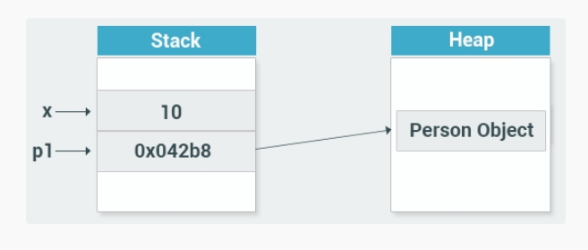

C#
1 Conceptos Básicos
1.1 C#
- Un elegante lenguaje orientado objetos.
- Corre sobre el .NET Framework.
1.2 .NET Framework
- Consiste en:
CLR (Common Languaje Runtime)- Es la fundación de .NET.
- Maneja muchas cosas.
- Código en tiempo de ejecución.
- Manejo de memoria.
- Etc.
.NET Framework Class Library.- Colección de clases, interfaces y Tipos de datos que te permiten hacer Un rango de tareas de programación comunes.
- C# La Usa extensivamente.
1.3 Variables
- Reservan información en memoria.
- Deben tener nombres descriptivos.
- También son llamadas identificadores.
1.4 Tipos de variables
- Define el tipo de valor que va a ser guardado en la variable asi como la memoria que se necesita.
int myAge;
Una linea de código que completa una acción es llamada declaración y terminan con punto y coma.
- Podemos asignarle un valor a la variable cuando la declaras.
int myAge = 18;
1.5 Tipos de datos
- Hay algunos tipos de datos por defecto en C#.
-
int - Entero.
-
float - Números de coma flotante (Con decimales pues.).
-
double - Una versión con más precisión (más dígitos) de float.
-
char - Un carácter.
-
bool trueofalse.-
string - Cadenas de caracteres.
-
valores
charson definidos con comillas simples ystringcon comillas dobles.
1.6 Mi primer programa en C#
- Cada aplicación de consola en C# debe tener una función llamada
Main- Esta función es el punto de entrada para cada aplicación.
1.7 Mostrando texto
- La mayoría de las aplicaciones necesitan algún tipo de
inputy nos tan algún tipo deoutput. - Para mostrar texto en pantalla usamos
Console.write()oConsole.WriteLine().- La diferencia es que con el segundo al final del texto da un salto de linea.
Console.WriteLine("Hola Mundo!");
- Para imprimir una cadena con un formato especifico podemos hacer.
int x = 10; double y = 20; Console.WriteLine("x = {0}; y = {1}", x, y);
{0}sera remplazado por el valor dexy{1}por el valor dey.
1.8 Leyendo texto
- Podemos leer texto de la terminal con
Console.ReadLine()y asignarlo a una variable.
yourInput = Console.ReadLine();
Esto siempre retorna un
string.
- Podemos Convertir este
stringen otro tipo de dato fácilmente con el métodoConvert.ToXXX.- EJ.
Convert.ToDoubleoConvert.ToBoolean.- También podemos convertir a enteros de un tamaño en especifico
Convert.ToInt16,Convert.ToInt32, etc.- El tipo de dato por defecto en enteros es
Int32.
- El tipo de dato por defecto en enteros es
- También podemos convertir a enteros de un tamaño en especifico
- EJ.
1.9 Comentarios
- Empiezan con
//. - Comentarios multilinea son
/* texto */.
1.10 La palabra var
- C# provee una forma de declarar variables y hacer que el compilador determine el tipo de dato de esta.
var num = 15;
- Estas variables son llamadas de Tipo implícito.
- Estas variables deben ser inicializadas con un valor.
// Esto dará un error! var num; num = 15;
Es buena práctica declarar tus variables con su tipo de dato y usar
varsolo para casos especiales.
1.11 Constantes
- Se definen constantes con la palabra
const.
//Ejemplo const double PI = 3.14;
- Las constantes siempre deben se ser inicializadas asignandoles un valor.
- Son variables que no pueden ser cambiadas.
1.12 Operadores Aritméticos
- Son los mismos de toda la vida
+, -, *, /, %. - Tienen una jerarquía de evaluación normal y esta puede afectarse con los parentesis.
1.13 Operadores de asignación e incremento
x += 2; // equivalente a x = x + 2; x %= 2; // equivalente a x = x % 2; // y de la misma manera con los operadores anteriores.
1.13.1 Operadores de incremento
- Podemos incrementar un valor a una variable cada que nuestro programa pase por allí.
- Es especialmente útil en ciclos.
x++; // equivalente a x = x + 1;
1.13.2 Formas de prefijo y postfijo
- El operador de incremento tiene dos formas.
++x; // prefijo x++; // postfijo
- Prefijo: Incrementa el valor y despues procede con la expresión.
- Postfijo: Evalúa la expresión y despues incrementa el valor.
int x = 3; int y = ++x; // x es 4, y es 4
int x = 3; int y = x++; // x es 4, y es 3
Esto también funciona con el operador de decremento
-, siendo x– y –x.
2 Condicionales y loops
2.1 if else
- Ejecuta un bloque de código si una condición se cumple.
if (x > y) { Console.WriteLine("x es más grande que y"); }
2.1.1 Operadores Relacionales
- Se usan para evaluar condiciones.
- Son los mismos de siempre; !=, >=, <=, ==.
2.1.2 Operador else
- Se ejecuta cuando no se cumple la condición dentro del
if.
if (x > y) { Console.WriteLine("x es más grande que y"); } else { Console.WriteLine("y es más grande que x"); }
- Podemos combinarlos y agruparlos como queramos
if ( x ) { // algo } else if ( y ) { // otra cosa } else if ( z ) { //aaaaaa } else { //final }
2.2 operador switch
- Provee una manera más elegante de comparar una variable con ciertos casos predefinidos.
- Cada caso es llamado
case.
int num = 3; switch (num) { case 1: Console.WriteLine("one"); break; case 2: Console.WriteLine("two"); break; case 3: Console.WriteLine("Three"); break; default: Console.WriteLine("No es uno, dos o tres"); break; }
Un
switchpuede incluir n número de casos, pero cada caso debe de ser único.
El bloque
defaultsolo se ejecuta si no se cumple ninguno de loscase.
2.2.1 La palabra break
- Se usa para romper el ciclo de ejecución del
switch- Sin el, el
switchseguirá comparando con otros case a pesar de entrar en uno. - También sirve para romper ciclos
forowhile. - En C#
breakes obligatorio al final de cadacase.
- Sin el, el
2.3 El ciclo while
- Ejecuta un bloque de código siempre y cuando una condición se cumpla.
int num = 1; while (num < 6) { Console.WriteLine(num); num++; }
El código anterior imprime los números del 1 al 5.
2.4 El ciclo for
- Ejecuta un bloque de código un número especifico de veces.
for (init; condition; increment) { //code }
Ejemplo:
for (int x = 10; x < 15; x++) { Console.WriteLine("Value of x: {0}", x); }
- En el bloque del incremento podemos hacer otras cosas como incrementar de 3 con
x+=3o decrementar de la misma manera el contador. - También podemos quitar el bloque
initeincrementdel bloque, pero los puntos y comas son obligatorios.
int x = 10; for ( ; x > 10 ; ) { Console.WriteLine(x); x -= 3; }
for (;;){}es un ciclo for infinito.
2.5 do-while
- Es similar a un ciclo
while, solo que en este el bloque de código es ejecutado al menos una vez.
int a = 0; do { Console.WriteLine(a); a++; } while (a < 5);
2.6 break y continue
- Otro uso de
breakes en ciclos, ya que “rompe” la ejecución de estos.
int num = 0; while (num < 20) { if (num == 5) break; Console.WriteLine(num); num++; }
En el bloque de anterior, el
whileparará cuandonumsea igual a 5.
- La palabra
continuees similar albreak, pero este solo se salta una iteración del ciclo.
for (int i = 0; i < 10; i++) { if (i == 5) continue; Console.WriteLine(i); }
2.7 Operadores lógicos
- Son usados para unir múltiples expresiones y retornar
trueofalse. - son
&&, ||, !, AND, OR y NOT respectivamente.
int age = 42; doubel money = 540; if (age > 18 && money > 100) { Console.WriteLine("Welkome"); }
2.8 El operador condicional
- También llamado operador ternario.
- Podemos hacer una operación condicional asi como en el if pero con una sola línea de código.
Expr1 ? Expr2 : Expr3;
- La Expr1, es evaluada, si esta es verdadera.
- Entonces Exp2 es evaluada y se convierte en el valor de toda la expresión.
- Si Expr1 es falsa, entonces Exp3 es evaluada y se convierte en el valor de toda la expresión.
int age = 42; string msg; msg = (age >= 18) ? "Welcome" : "Sorry"; Console.WriteLine(msg)
3 Métodos
3.1 Introducción a los métodos
- Un método es un grupo de declaraciones que hacen una tarea en particular.
- Además de los métodos que tiene C# puedes definir los tuyos.
- Tienen muchas ventajas:
- Son código reusable.
- Fáciles de testear.
- Modificaciones a un método no afectan al programa.
- Un método puede aceptar diferentes tipos de inputs.
Todo programa de C# tiene al menos un método, el método
Main.
3.2 Declarando métodos
- Para usar un método primero necesitas declararlo, y después llamarlo.
- Cada declaración de método incluye:
- El tipo de dato que retorna.
- El nombre del método.
- Una lista opcional de parametros.
<tipo de dato de retorno> name(type1 part1, type2 part2, ..., typeN partN){ //Bloque de código.. return <tipo de dato> }
int Sqr(int x) { int result = x * x; return result; }
- Podemos hacer que métodos no retornen nada poniendoles el tipo de dato
void.
3.3 Llamando a métodos
static void SayHi() { Console.WriteLine("Hello"); } static void Main(string[] args) { SayHi(); }
Aquí declaramos un método y lo llamamos desde
Main, la palabrastatices para hacer los métodos accesibles alMain.
3.4 Parametros
- Las declaraciones de métodos pueden definir una serie de parametros para trabajar.
- Estos parametros son variables que aceptan valores específicos.
void Print(int x) { Console.WriteLine(x); }
Las declaraciones de parametros son similares a las declaraciones de variables; Estas solo existen dentro del método donde se declararon.
void Print(int x) { Console.WriteLine(x); } static void Main(string[] args) { Print(42); }
Ahora podemos llamar a nuestro método y pasarle argumentos.
3.4.1 Parametros múltiples
- Se pueden tener N número de parametros en un método separandolos con comas en la definición.
int Sum(int x, int y) { return x + y; }
Los métodos retornan valores con la palabra
return.
int Sum(int x, int y) { return x + y; } static void Main(string[] args) { suma = Sum(42, 45); Console.WriteLine(suma); }
Podemos asignar parametros múltiples cuando llamamos al método, separandolos con comas, asi como también guardar lo que nos regresa el método en una variable para usarlo después.
3.4.2 Parametros opcionales
- Cuando defines métodos puedes declarar valores por defecto a parametros opcionales.
- Si estos parametros no están presentes cuando se llama al método se usan los valores por defecto.
static int Pow(int x, int y=2) { int result = 1; for (int i = 0; i < y; i++) { result *= x; } return result; }
El método
Powasigna un valor por defecto de 2 al parametro y.
static void Main(string[] args) { Console.WriteLine(Pow(4)); Console.WriteLine(Pow(4,3)); }
3.4.3 Parametros nombrados
- Los argumentos nombrados nos ayudan a no tener que recordar el orden de los parametros.
- Cada argumento puede ser especificado a la variable a la que pertenece.
static int Are(int h, int w) { return h * w; } static void Main(string[] args) { int res = Area(w: 5, h: 8); Console.WriteLine(res); }
3.5 Pasando argumentos
- Hay tres maneras de pasar argumentos a un método cuando este es llamado.
- Por valor, por referencia y como Output.
- Si se hace por valor, copia el argumento del valor dentro del parámetro formal del método.
- Este es el comportamiento por defecto de C#.
static void Sqrt(int x) { x = x * x; } static void Main() { int a = 3; Sqrt(a); Console.WriteLine(a); // imprime 3 }
- En este caso
xes parametro deSqrt, y a es el valor pasado al método.
El método
Sqrt()no cambia el valor de la variable, trabaja con el valor, no con la variable.
3.5.1 Pasando por referencia
- Pasar un argumento por referencia, copia la dirección de memoria en el parametro formal del método.
- Dentro de este, esta dirección es usada para acceder al argumento.
- Esto significa que los cambios que se hacen dentro del método, afectan al parametro.
- Dentro de este, esta dirección es usada para acceder al argumento.
static void Sqrt(ref int x) // <--- { x = x * x; } static void Main() { int a = 3; Sqrt(ref a); // <--- Console.WriteLine(a); // imprime 9 }
3.5.2 Pasando por Output
- Parecidos a pasar por referencia.
- La diferencia esta en que estos transfieren datos fuera del método (como un return).
- Son útiles para retornar varios valores de un método.
- Son denotados por la palabra
out.
static void GetValues(out int x, out int y) // <--- { x = 5; y = 10; } static void Main() { int a, b; GetValues(out a, out b); // Ahora a = 5 y b = 10 }
Las variables deben de estar inicializadas, pero no tener ningún valor.
3.6 Sobrecarga
- La Sobrecarga de métodos es cuando dos métodos tienen el mismo nombre pero diferentes parametros.
void Print(int a) { Console.WriteLine("Value: " + a); } void Print(double a) { Console.WriteLine("Value: " + a); }
Con la sobrecarga podemos tener una misma función que funcione con
inty condouble.
- Cuando se hace sobrecarga, la definición de los métodos debe diferir en su tipo o numero de argumentos.
- Cuando se llame, esta llamada llegara a la implementación que coincida con lo que se da.
- Todos los métodos deben coincidir en el tipo de retorno que tienen.
3.7 Recursividad
- Es un método que se llama a si mismo.
- Un ejemplo puede ser el calculo del factorial de un número.
- num * num-1 hasta 1.
static int Fact(int num) { if (num == 1) { return 1; } return num * Fact(num-1); }
4 Clases y objetos
4.1 Clases
- En la programación orientada a objetos una clase es un tipo de dato que define un conjunto de:
- Variables y métodos para un objeto declarado.
- Una clase es como un plano.
- Define datos y comportamientos para un tipo.
class MiPrimeraClase { //variables, métodos, etc. }
Define un tipo de dato para objetos, pero no es un objeto.
4.2 Objetos
- Una clase puede usarse para declarar múltiples objetos.
- Un objeto es llamado también es llamado una instancia de una clase.
- Cada objeto tiene sus propias características, llamadas atributos.
- Las cuales son heredadas de la clase de la cual es instancia.
4.3 Valor y tipos de referencia
4.3.1 Tipos de Valor
- C# tiene dos formas de guardar valores, por referencia y por valor.
- Los tipos de dato predeterminados son usados para declarar variables que son tipos de valor.
- Su valor es guardado en la memoria en un lugar llamado stack (la pila).
4.3.2 Tipos de referencia.
- El tipo de referencia es usado para guardar objetos.
- Como por ejemplo cuando instancias un objeto es guardado como un tipo de referencia.
- Estos son guardados en una parte de la memoria llamada heap (Montículo).
- Cuando instancias un objeto, los datos de este son guardados en la heap mientras que la dirección de memoria de la heap es guardada en el stack.

-
Stack - Es usado para asignación de memoria estática, eso incluye a todas tus variables como x.
-
Heap - Es usada para asignación de memoria dinámica, eso incluye objetos custom que podrían necesitar más memoria durante la ejecución de un programa.
4.4 Clases
class Person { int age; string name; public void SayHi() { Console.WriteLine("Hola"); } }
- En el código de arriba tenemos una clase Persona.
- Tiene las variables
ageyname, asi como el métodoSayHi.
- Tiene las variables
- Podemos incluir
access modifiers(modificadores de acceso), también llamadosmembers(miembros).- Son palabras claves usadas para especificar la accesibilidad a un miembro.
- Un miembro definido como público puede se accedido desde afuera de la clase.
- Por eso es que
SayHi()es público.
- Por eso es que
class Person { int age; string name; public void SayHi() { Console.WriteLine("Hi"); } } static void Main(string[] args) { Person p1 = new Person(); p1.SayHi(); }
- El operador
new, instancia al objeto y retorna una referencia de este a su posición en la heap. - El código de arriba instancia un objeto tipo
Personllamadop1y lo usa para llamar al método públicoSayHi().
class Dog { public string name; public int age; } static void Main(string[] args) { Dog bob = new Dog(); bob.name = "Bobby"; bob.age = 3; Console.WriteLine(bob.age); }
- Podemos acceder a los miembros públicos de una clase, en el ejemplo las variables nombre y edad.
4.5 Encapsulación
- En programación se refiere a restringir el acceso a ciertas partes de una clase.
- Es llamado también
information hiding. - Nos permite ocultar detalles de una clase.
- Es llamado también
- C# nos da las siguientes modificadores de acceso:
public.- Hace un miembro accesible desde fuera de la clase.
private.- Hace los miembros accesibles solo dentro de la clase y los oculta fuera de esta.
protected.internal.protected internal.
class BankAccount { private double balance=0; public void Deposit(double n) { balance += n; } public void Withdraw(double n) { balance -= n; } public double GetBalance() { return balance; } } class Program { static void Main(string[] args) { BankAccount b = new BankAccount(); b.Deposit(199); b.Withdraw(42); Console.WriteLine(b.GetBalance()); } }
- Usamos encapsulación para ocultar la variable
balance. - Aun así podemos acceder a
balancemediante los métodosDeposit(),Withdraw()yGetBalance().- Así podemos tener el control sobre lo que pasa con la variable
balancey aplicar distintas verificaciones sobre lo que queremos hacer.
- Así podemos tener el control sobre lo que pasa con la variable
- La encapsulación nos permite:
- Controlar la manera en la que se accede a los datos o en la que se modifican.
- Podemos extender el código de una manera más segura y limpia a nuevos requerimientos.
4.6 Constructores
- Es un miembro especial de una clase que se ejecuta cuando se crea un nuevo objeto de esta clase.
- Tienen el mismo nombre que la clase, son públicos y no tienen ningún retorno.
class Person { private int age; public Person() { Console.WriteLine("Hi there"); } }
- Esto es útil cuando necesitamos que el objeto sea creado con ciertos parametros.
- Por default no tienen parametros, pero si se necesitan pueden agregarse.
class Person { private int age; private string name; public Person(string nm) { name = nm; } public string getName() { return name; } } static void Main(string[] args) { Person p = new Person("David"); Console.WriteLine(p.getName()); }
En el ejemplo creamos un objeto pasándole un argumento al constructor.
4.7 Propiedades
- Es una buena práctica encapsular los miembros de una clase y proveer acceso a ellos solo cuando es necesario.
- Una propiedad es un miembro que provee un mecanismo flexible para leer, escribir o computar el valor de un campo privado.
- Estas pueden ser usadas como miembros públicos pero incluyen métodos llamados
accessors.- Estos incluyen declaraciones que podemos usar para obtener get (leer o computar) o set (escribir) un campo en especifico.
- Estas pueden ser usadas como miembros públicos pero incluyen métodos llamados
class Person { private string name; //campo public string Name // Propiedad { get { return name; } set { name = value; } } }
- En el ejemplo, la clase
Persontiene una propiedad llamadaNameque tiene unsety ungetpara acceder a el camponame.
valuerepresenta el valor que le asignemos a una propiedad usandoset.
Se le puede llamar a una propiedad con cualquier nombre pero la convención es que las propiedades tengan el mismo nombre que el campo peo con mayúscula en la primera letra.
Una vez la propiedad es definida podemos usarla para asignar o leer del miembro.
static void Main(string[] args) { Person p = new Person; p.Name = "Bob"; Console.WriteLine(p.Name); }
Se accede a la propiedad por su nombre, como cualquier miembro público de la clase.
- Podemos tener una propiedad con solo un
gety sin unseto hacer la propiedad privada. - Las propiedades nos permiten tener la opción de controlar la lógica de acceder a una variable.
class Person { private int age=0; public int Age; { get { return age; } set { if (value > 0) { age = value; } } } }
En el ejemplo verificamos que el valor que le asignemos a
agesea mayor a 0.
4.8 Propiedades auto implementadas.
- Cuando no necesitas ninguna lógica las propiedades, C# provee una manera rápida para declarar miembros privados a través de sus propiedades.
public string Name { get; set; }
- Esta es la llamada propiedad auto-implementada.
- Usándola ya no necesitamos declarar el campo privado por separado.
class Person { public string Name { get; set; } } static void Main(string[] args) { Person p = new Person; p.Name = "Bob"; Console.WriteLine(p.Name); } // Imprime Bob
5 Arreglos y Cadenas
5.1 Arreglos
- También llamados Arrays.
- C# provee numerosas clases para guardar y manipular datos.
- Es una colección de elementos del mismo tipo.
// declaración de un array int [ ] myArray;
Con esto declaramos un arreglo de enteros.
- Pero sabiendo que los arreglos son objetos, debemos declararlos como tal.
int [ ] myArray = new int[5];
Con esto instanciamos un arreglo de enteros con 5 espacios dentro de el.
- Despues de crear un arreglo podemos asignar valores en un índice especifico.
int [ ] myArray = new int[5]; myArray[0] = 23
Aquí asignamos el número 23 en la posición 0 del arreglo.
- En C# los arreglos empiezan en 0.
string [ ] names = new string[3] {"Jhon", "Cena", "Jose"};
Podemos asignar valores iniciales a un arreglo se esta forma.
- Si asignamos valores iniciales podemos omitir el número de elementos que son en la declaración.
- Incluso podemos omitir el operador new.
string [ ] names = {"Jhon", "Cena", "Jose"};
- Para acceder a los elementos del arreglo solo tenemos que especificar el número de índice que tiene el elemento.
Console.WriteLine(names[2]);
5.2 Usando arreglos en ciclos
- A veces es necesario iterar sobre los elementos de un arreglo.
int[ ] a = new int[10]; for (int k = 0; k < 10; k++) { a[k] = k*2; }
- Esto se puede lograr de manera fácil y rápida con un ciclo
for.
for (int k = 0; k < 10; k++) { Console.WriteLine(a[k]); }
5.2.1 El ciclo foreach
- El ciclo
foreachnos da una manera más fácil de acceder a los elementos de un arreglo.
foreach (int k in a) { Console.WriteLine(k); }
Este es el equivalente de el ejemplo anterior con un ciclo
for.
- Este itera sobre el arreglo, y asigna el valor del elemento actual a
k.
El tipo de dato dentro del
foreachdebe de coincidir con el tipo de los elementos del arreglo.
// a veces se usa la parlabra var dentro del foreach foreach (var k in a) { //aaaaaa }
- Esto se hace para que el compilador determine el tipo de dato apropiado automáticamente.
5.3 Arreglos multidimencionales
- Los arreglos pueden tener mútltipes dimensiones.
int [ , ] x = new int[3,4];
Esto es una matriz de 3x4.
5.4 Arreglos dentados
- También llamados jagged arrays.
- Es básicamente un arreglo en el cual sus elementos son arreglos.
int [][] = jaggedArr = new int[3][];
Tenemos un arreglo de una sola dimensión, con 3 elementos, los cuales son arreglos de una sola dimensión.
int[ ][ ] jaggedArr = new int[ ][ ] { new int[ ] {1,8,2,7,9}, new int[ ] {2,4,6}, new int[ ] {33,42} };
Si queremos tener valores iniciales, podemos declarar el mismo arreglo de esta manera.
int x = jaggedArr[2][1]; //42
Podemos acceder a los elementos del arreglo de esta manera.
5.5 Propiedades de los arreglos y métodos
5.5.1 Propiedades de los arreglos
- La clase de
arraynos da distintas propiedades y métodos para trabajar con ella.- Por ejemplo las propiedades
LengthyRanknos dejan saber la longitud y las dimensiones de un arreglo respectivamente. - Algunos métodos que nos da la clase
arrayson:Max,Min,Sumque nos retornan el elemento máximo, mínimo y la suma de todos los elementos respectivamente.
- Por ejemplo las propiedades
5.6 Trabajando con cadenas
5.6.1 Cadenas
- Es común pensar en las cadenas de caracteres como un arreglo de caracteres, pero en C# son objetos.
- Cuando creas una cadena en C#, instancias un objeto de la clase
string. - Tenemos unas cuantas propiedades y métodos útiles para trabajar con cadenas.
Length: Nos retorna la longitud de una cadena.IndexOf(value): Retorna el índice del la primera ocurrencia al valor dado.Insert(index, value): Inserta el valor dado en la posición dada.Remove(index): Remueve todos los caracteres de la cadena desde el índice especificado.Substring(index, lenth): Retorna una porción de la cadena, con desde el índice y por la longitud dada.Contains(value): RetornaTruesi la cadena contiene el valor especificado.
- También podemos acceder a los elementos de una cadena por su índice, como si fuera un arreglo.
static void Main(string[] args) { string text = "This is some text about a dog. The word dog appears in this text a number of times. This is the end."; text = text.Replace("dog", "cat"); text = text.Substring(0, text.IndexOf(".")+1); Console.WriteLine(text); }
C# tiene muchos métodos para trabajar con cadenas.
6 Más sobre clases
6.1 Destructores
- Así como los constructores son usados cuando una clase es instanciada los destructores son usados cuando una clase es destruida o borrada.
- Los destructores tienes las siguientes características:
- Una clase solo puede tener un solo destructor.
- Los destructores no pueden ser llamados, son llamados automáticamente.
- No toman parametros o modificadores.
- El nombre de el destructor tiene que ser el mismo que el de la clase con un
~antes del nombre.
class Dog { ~Dog() { //Código } }
Son útiles para liberar recursos cuando sales del programa, ejemplos pueden ser: cerrando archivos, liberar memoria, etc.
class Dog { public Dog() { Console.WriteLine("Constructor"); } ~Dog() { Console.WriteLine("Destructor"); } } static void Main(string[] args) { Dog d = new Dog(); }
En este ejemplo, cuando instanciamos el objeto el programa imprime “Constructor” y cuando el programa termina, el objeto es borrado y el destructor imprime “Destructor”.
6.2 Miembros estáticos
- Todos los miembros de una clase (variables, propiedades, métodos) pueden ser declarados como
static(estáticos).- Esto hace que los miembros pertenezcan a la clase en vez de pertenecer al objeto individual.
- No importa cuantos objetos de la clase son creados, solo hay una copia del miembro estático.
- Esto hace que los miembros pertenezcan a la clase en vez de pertenecer al objeto individual.
class Cat { public static int count=0; public Cat() { count++; } }
No importa cuantos objetos
Catinstanciemos,countsiempre sera el mismo para todos estos.
- Debido a su naturaleza global, estos miembros pueden ser accedidos directamente usando el nombre de la clase.
class Cat { public static int count=0; public Cat() { count++; } } static void Main(string[] args) { Cat c1 = new Cat(); Cat c2 = new Cat(); Console.WriteLine(Cat.count()); // 2 }
En el ejemplo accedemos a la variable
countcon el nombre de la clase y no el de las instancias, y esta variable es la misma en todas las instancias deCat.
Se debe acceder a los miembros estáticos con el nombre de la clase siempre.
El mismo concepto se aplica a los métodos estáticos.
class Dog { public static void Bark() { Console.WriteLine("Woof"); } } static void Main(string[] args) { Dog.Bark(); }
Métodos estáticos solo pueden acceder a miembros estáticos.
El método
Maines estático, y es el punto de entrada de cualquier programa, entonces cualquier método llamado directamente desde el Main tiene que ser estático.
- Las constantes son estáticas por definición.
class Math { public const int ONE = 1; }
6.2.1 Constructores estáticos
- Los constructores pueden ser declarados estáticos para inicializar miembros estáticos de la clase.
class SomeClass { public static int x { get; set; } public static int y { get; set; } static SomeClass() { x = 10; y = 10; } }
El constructor sera llamado cuando intentemos acceder a
SomeClass.XoSomeClass.Y.
6.2.2 Clases estáticas
- Una clase puede ser declarada como estática.
- Solo puede contener miembros estáticos.
- No se puede instanciar un objeto de una clase estática, ya que solo una instancia puede existir en el programa.
- Son útiles para combinar propiedades lógicas y métodos.
- La clase
Mathes un buen ejemplo.
- La clase
Console.WriteLine(Math.Pow(2, 3));
Podemos acceder a la clase
Mathusando el nombre de la clase, sin declarar un objeto
- Ejemplos
La clase
Arraytiene algunos métodos estáticos para manipular arrelgos.int[] arr = {1, 2, 3, 4}; Array.Reverse(arr); //arr = {4, 3, 2, 1} Array.Sort(arr); //arr = {1, 2, 3, 4}
La clase
Stringtambién los tiene.string s1 = "some text"; string s2 = "another text"; String.Concat(s1, s2); // combines the two strings String.Equals(s1, s2); // returns false
La clase
ConsoleTambién es otro ejemplo de una clase estática.
6.3 This & readonly
6.3.1 This
- La palabra
Thises usada dentro de una clase y se refiere a la instancia actual de la clase.- Al objeto actual.
- Se usa comúnmente para distinguir los miembros de la clase de otros datos como.
- Parametros locales o formales de un método.
class Person { private string name; public Person(string name) { this.name = name; } }
Aquí,
this.namerepresenta el miembro de la clase ynameel nombre el parametro del constructor.
Otro uso común de
thises para pasar la instancia actual a un método como un parametro:ShowPersonInfo(this);
6.3.2 El modificador readonly
- Previene que un miembro de una clase sea modificado despues de la construcción.
- Esto significa que solo puede ser modificado cuando lo declaras desde un constructor.
class Person { private readonly string name = "John"; public Person(string name) { this.name = name; } }
Si intentamos modificar el campo
nameen algún otro lugar tendremos un error.
readonlyyconstson parecidos pero tienen ciertas diferencias.- Una campo
constdebe de ser inicializado con un valor yreadonlyno. - Un campo
readonlypuede ser cambiado en un constructor, elconstno. - Un campo
readonlypuede ser asignado a un valor que es el resultado de un calculo,constno.
- Una campo
6.4 Indexadores
- Permiten a objetos ser indexados como si fueran un arreglo.
- Un ejemplo es la clase
String, la cual es un arreglo de objetos tipoCharimplementando un indexadores para que podamos acceder a los elementos.
string str = "Hello World"; char x = str[4]; Console.WriteLine(x);
- La declaración de un indexador es similar a una propiedad.
class Clients { private string[] names = new string[10]; public string this[int index] { get { return names[index]; } set { names[index] = value; } } }
- Todos los indexadores necesitan un índice.
- Se usan
getysetpara definir un indexador.- La diferencia es que los indexadores retornan o ponen un valor particular de la instancia del objeto.
- Son definidos con la palabra
this.- Esto para obtener o poner el elemento de la instancia.
Clients c = new Clients(); c[0] = "Dave"; c[1] = "Bob"; Console.WriteLine(c[1]);
Se usan indexadores típicamente si la clase representa una lista, colección o un arreglo de objetos.
6.5 Sobrecarga de Operadores
- La mayoría de los operadores en C# puede ser sobrecargados.
- Esto significa que pueden ser redefinidos para que hagan otras cosas.
- Por ejemplo, podemos redefinir el comportamiento de
+en una clase.
class Box { public int Height {get; set;} public int Width {get; set;} public Box(int h, int w) { Height = h; Width = w; } } static void Main(string[] args) { Box b1 = new Box(14, 3); Box b2 = new Box(5, 7); }
Teniendo dos objetos tipo Box si quisiéramos sumarlos para tener un objeto Box más grande haríamos.
Box b3 = b1 + b2;
Este comportamiento lo lograriamos a través de la sobrecarga de operadores.
- Son métodos con nombres especiales, donde la palabra
operatorva antes que el operador a definir. - Similar a cualquier otro método, tienen tipos de retorno y una lista de parametros.
public static Box operator+ (Box a, Box b) { int h = a.Height + b.Height; int w = a.Width + b.Width; Box res = new Box(h, w); return res; }
En el ejemplo estamos sobrecargando el operador
+para objetos de nuestra claseBox.
Todos los operadores sobrecargados deben ser estáticos.
class Box { public int Height { get; set; } public int Width { get; set; } public Box(int h, int w) { Height = h; Width = w; } public static Box operator+(Box a, Box b) { int h = a.Height + b.Height; int w = a.Width + b.Width; Box res = new Box(h, w); return res; } } static void Main(string[] args) { Box b1 = new Box(14, 3); Box b2 = new Box(5, 7); Box b3 = b1 + b2; Console.WriteLine(b3.Height);// 19 Console.WriteLine(b3.Width);// 10 }
Podemos sobrecargar todos los operadores aritméticos y de comparación.
7 Herencia y polimorfismo
7.1 Herencia
- Nos permite definir una clase basada en otra clase.
- La clase que hereda sus propiedades a otra es llamada clase base.
- La clase a la que se hereda es llamada clase derivada.
- Podemos definir una clase
Animalcon ciertas propiedades y usarla para construir las clasesPerroyGato.- Estas heredan todas las propiedades de la clase animal y pueden tener sus propias propiedades.
class Animal { public int Legs {get; set;} public int Age {get; set;} }
Podemos tener nuestra clase
Animalque será nuestra clase base.
class Dog : Animal { public Dog() { Legs = 4; } public void Bark() { Console.Write("Woof"); } }
Y con ella crear nuestra clase
Dog, usando sus miembros y agregando unos propios de la clase nueva.
- Debemos definir la clase y con dos puntos después del nombre definir la clase base de nuestra clase.
- Todos los miembros públicos de la clase
Animalse vuelven miembros públicos de la claseDog, incluyendo métodos.
static void Main(string[] args) { Dog d = new Dog(); Console.WriteLine(d.legs); // 4 d.Bark(); }
Esto nos permite reusar código ya escrito sin necesidad de reescribir.
C# no soporta herencia múltiple, asi que no puedes heredar de varias clases al mismo tiempo.
Sin embargo, puedes usar interfaces para implementar herencia múltiple.
7.2 Miembros protegidos
- El modificador
protectedes parecido aprivate.- La diferencia es que
protectedpuede ser accedido desde las clases derivadas.
- La diferencia es que
class Person { protected int Age {get; set;} protected string Name {get; set;} } class Student : Person { public Student(string nm) { Name = nm; } public void Speak() { Console.Write("Name: " + Name); } } static void Main(string[] args) { Student s = new Student("David"); s.Speak(); // Name: David }
En el ejemplo podemos acceder y modificar la propiedad
name, desde la clase derivada.
static void Main(string[] args) { Student s = new Student("David"); s.Name = "Bob"; // Error! }
Si intentamos acceder a ella desde afuera de la clase obtendremos un error.
7.3 Sellado
- Podemos prevenir a las clases de heredar sus miembros usando el modificador
sealed.
sealed class Animal { //some code } class Dog : Animal { } //Error static void Main(string[] args) { }
7.4 Constructor y destructor de la clase derivada.
- Cada que se instancia un objeto se llama a su constructor y cada que se destruye se llama a su destructor.
- Con la herencia, la clase heredada no hereda el constructor y el destructor de la clase base.
- Así que debes definir siempre unos nuevos cada que creas una clase heredada
class Animal { public Animal() { Console.WriteLine("Animal created"); } ~Animal() { Console.WriteLine("Animal deleted"); } } class Dog: Animal { public Dog() { Console.WriteLine("Dog created :D"); } ~Dog() { Console.WriteLine("Dog deleted :c"); } } static void Main(string[] args) { Dog d = new Dog(); } // Resultando en: //Animal created //Dog created //Dog deleted //Animal deleted
Cuando se crea el objeto
Dogllamamos primero a el constructor de la claseAnimaly después al de la claseDog, y con los destructores pasa lo mismo.
7.5 Poliformismo
- La palabra significa “Tener muchas formas”.
- Significa que un método puede tener muchas implementaciones diferentes.